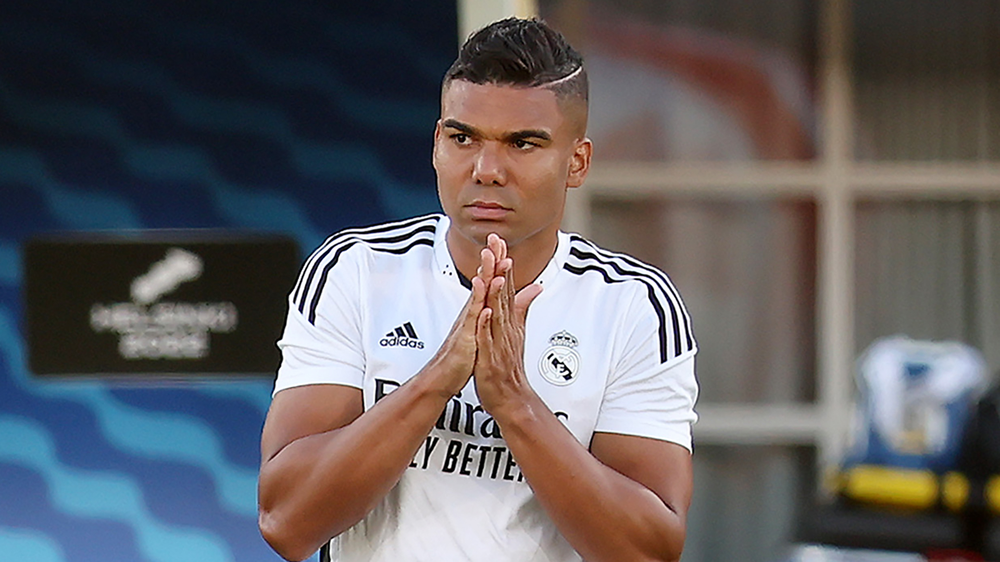

Casemiro e seu caminho pelo Real Madrid

- Nome:Carlos Henrique Casimiro
- Data de nasc:23 de fevereiro de 1992(30 anos)
- Local de nasc:São José dos Campos, São Paulo, Brasil
Torneios e títulos
- Champions Leaque:5 títulos
- Mundiais de clubes:3 títulos
- Supertaças da europa:2 títulos
- Liga Espanhola:3 títulos
- Taça do Rei:1 título
- Supertaça da Espanha:2 títulos